Startup e imprese
Startup incubate, freelance e imprese della community TNV. Chi vuole lavora in casa, tra desk e uffici in Viale La Plaia.
Community
Startup, professionisti e imprese: chi lavora in casa e chi fa parte della rete. La community è aperta: si entra da un evento, da un desk, da un progetto. Quando a un’impresa o a una startup serve la persona giusta, la cerchiamo qui.
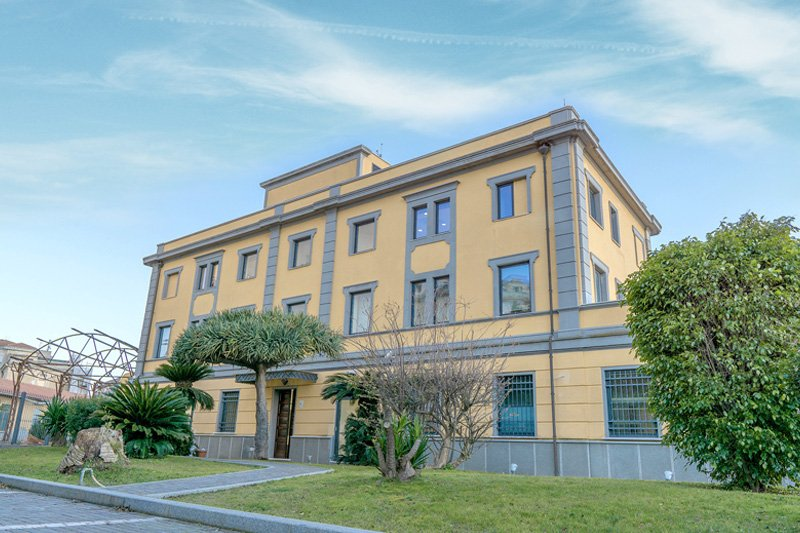
Come è fatta
Non tutti quelli che conosciamo lavorano qui, e non tutti quelli che lavorano qui fanno lo stesso mestiere. Per questo serve: dentro c’è quasi sempre qualcuno che ha già risolto il problema.
Startup incubate, freelance e imprese della community TNV. Chi vuole lavora in casa, tra desk e uffici in Viale La Plaia.
Imprese della community e della rete TNV, di settori diversi, che possiamo coinvolgere in un progetto quando sono utili.
BIOS Factory con l’industria, C-Lab UniCa con l’università, e i Tech Talks aperti a chi arriva da fuori.
01 · Startup e imprese
Qualche nome, tra le realtà della community. L’elenco completo, con cosa fa ciascuna, è sulla pagina startup.
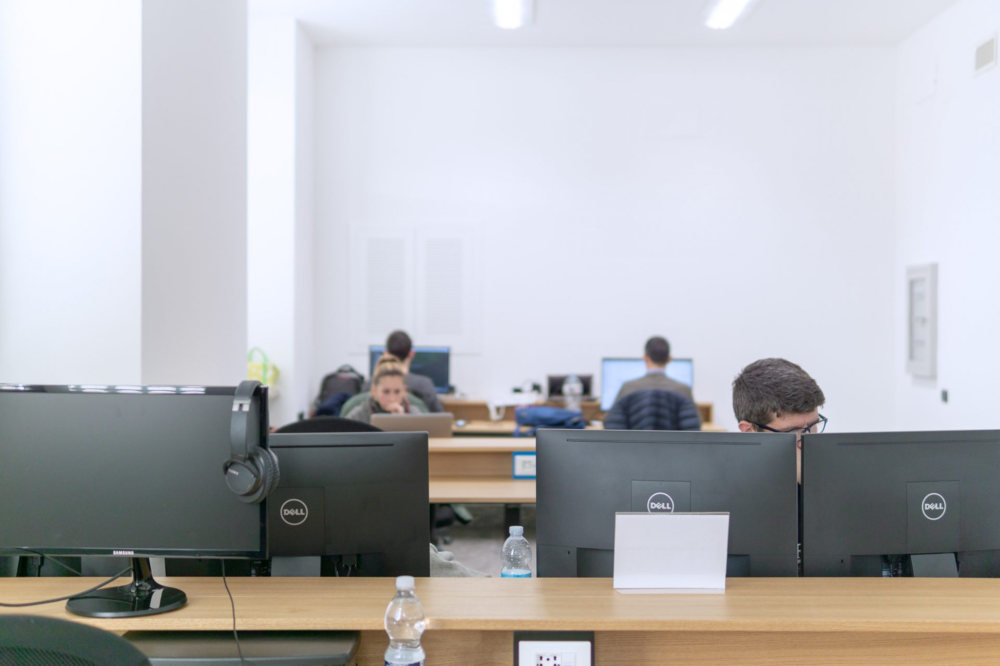


Tutte le startup e le imprese della community →Entrare in casa: desk e uffici →
02 · Aziende della rete
Imprese della community e della rete TNV, di settori e dimensioni diversi. Quando in un progetto possono essere utili, le coinvolgiamo; quando serve qualcun altro, cerchiamo qualcun altro.
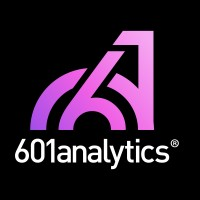
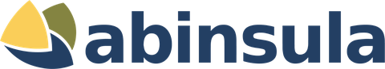
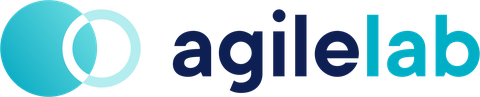
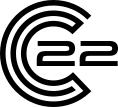
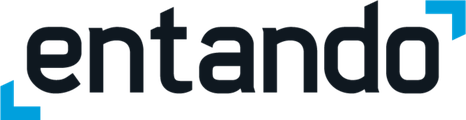
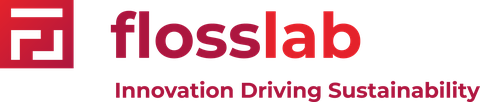

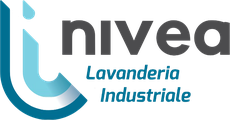


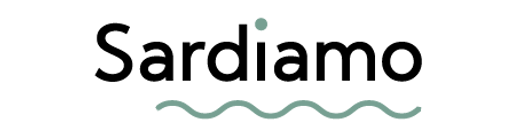
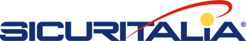
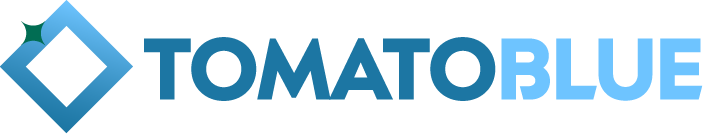
Ecosistema
Università, centri di ricerca, spazi culturali, scuole e programmi del territorio con cui collaboriamo: il terreno su cui crescono le startup e le aziende della community.
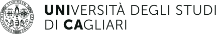

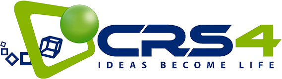
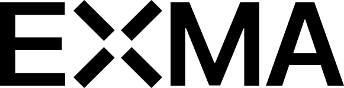
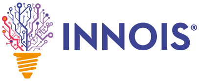
Cultura e territorio
Quello che facciamo con le startup lo portiamo anche nei settori culturali e creativi della città.
Dal 2026 The Net Value è socia fondatrice della Società Consortile CLOE, con Teatro di Sardegna, Fuorimargine, Area X e Radio X, per la gestione del Centro Comunale d’Arte e Cultura EXMA di Cagliari, in un partenariato pubblico-privato di 25 anni con il Comune di Cagliari. Contribuiamo alla governance del consorzio e supportiamo il fundraising del centro.
Dal 2022 affianchiamo l’associazione di artisti Castia Art con mentorship e consulenza pro bono su organizzazione e governance. Insieme abbiamo organizzato numerose mostre e workshop, in Viale La Plaia e in altre sedi della città.
Nel 2023 tra i partner della mostra d’arte diffusa su sostenibilità ambientale e sociale promossa da 2050 To People lungo il percorso ciclabile di Su Siccu, con installazioni, eventi e seminari su ambiente, mobilità e inclusione sociale.
03 · Programmi ed eventi
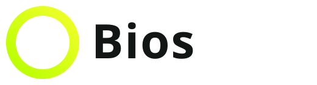
Bio-based & Circular Innovation Outpost Sardinia: lo operiamo in Sardegna con Zest. Primo batch in chiusura, secondo in partenza. Tra i progetti: Eni, Fratelli Cerchi, Digital Uniforms, Dab e Nivea, ciascuna con una startup.
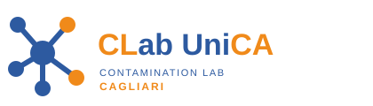
Il laboratorio dell’Università di Cagliari da cui sono uscite, tra le altre, IntendiMe, Bloomlabs e Bacfarm. Circa 840 studenti e 25 startup dal 2013.
Open innovation →Eventi · Tech Talks
Tech Talks gratuiti su AI, cloud e cybersecurity, Community Lunch e Meet the Founder, workshop, seminari e mostre: aperti anche a chi arriva da fuori. Tra i cicli, AI Meets Cybersecurity con Innois e SheTech Connections per le donne nel tech. Molti eventi nascono insieme ad altri attori dell’ecosistema, come CRS4, Università di Cagliari e Innois. Il programma 2026 gira intorno all’intelligenza artificiale come infrastruttura per la crescita d’impresa e alla sovranità digitale.
Prossimi eventi e archivio completo →Organizza un evento qui →
Come usiamo la rete
Il primo incontro è gratuito: ci racconti il progetto o il problema. Se c’è un lavoro da fare, ricevi un preventivo. La direzione del progetto è a pagamento; gli eventi e la community restano aperti.